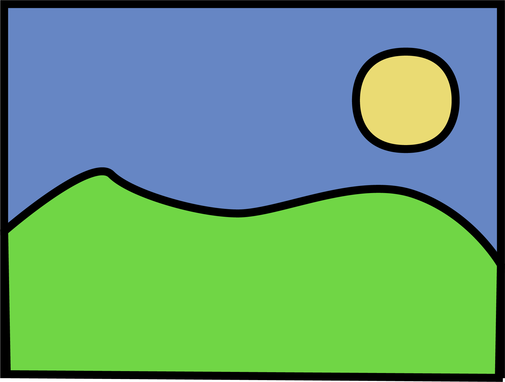
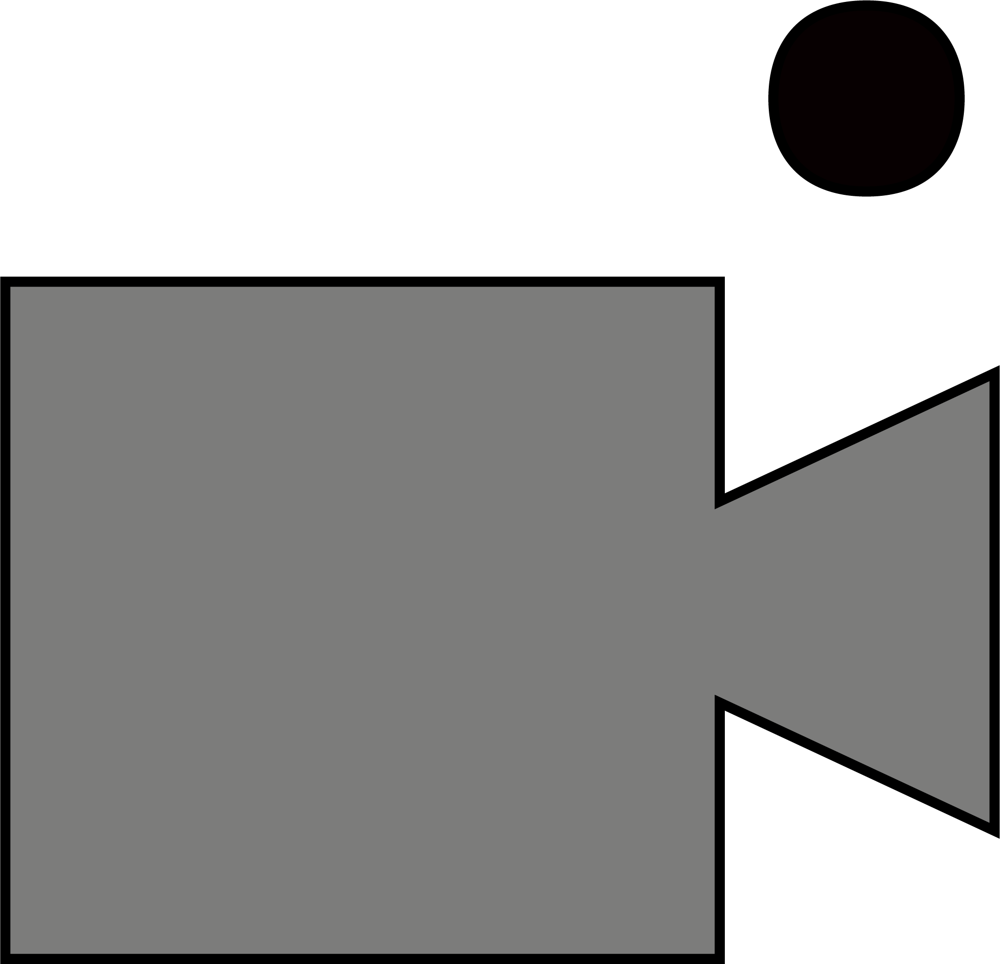
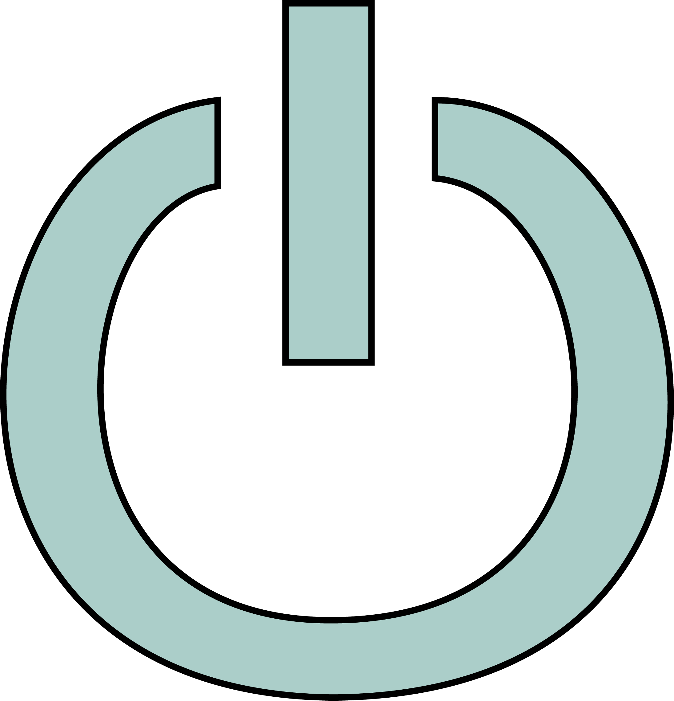

<div class="camera-panel container-fluid">
<div class="camera-head row">
    
    
    
    
    <div class="camera-label col-5">
        <h3 class="camera-name">No Stream Selected</h3>
    </div>
          <button class="camera-select dropdown dropdown-toggle col-2" type="button" data-toggle="dropdown">Stream Select
            <span class="caret"></span></button>
            <ul class="camera-selections dropdown-menu">
            </ul>
    
</div>
<div class="camera-stream">

</div>
</div>
